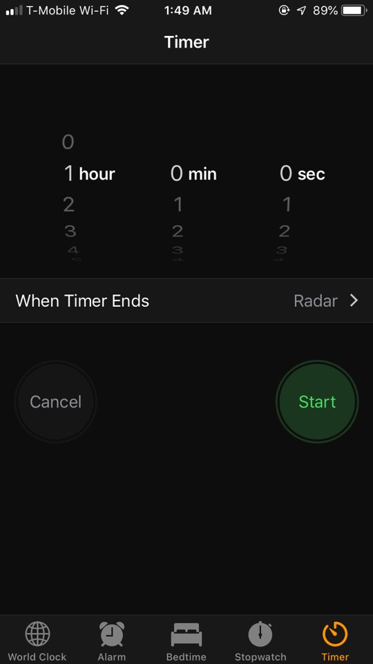

Tips for the timekeeper
As you could notice from the how part of making table clock, timekeeper is an important role in it. As a result, there are few tips that I have for the timekeeper:
- The timekeeper must be a person with a strong leadership
- The timekeeper must not fall asleep or lose track of people; who is holding flashlight
- Please, please, please. Keep track of the timer. Don't get distracted. It is a very focus-required task.
- Do not be indecisive. Just choose a direction and start, geez

Protocol
Sometimes, there are unexpected things that the user could confront. In case of any emergency, follow these protocols:
- If the battery of the light device runs out, then inform the timekeeper about it and make sure the timekeeper pauses the timer. Then, carefully replace the old battery with a new one. If the clock performer is using a device that requires to charge it from the outlet, then simply just change the device into a different one that is charged up!
- If the flashlight or the device holder needs to be out of the table for any circumstances, also then pause the clock until the person comes back!
- If the person cannot come back for any reason, then the user needs to find someone to replace that position!
- If there’s any natural disaster occurring around the clock, then just run for “your” life!